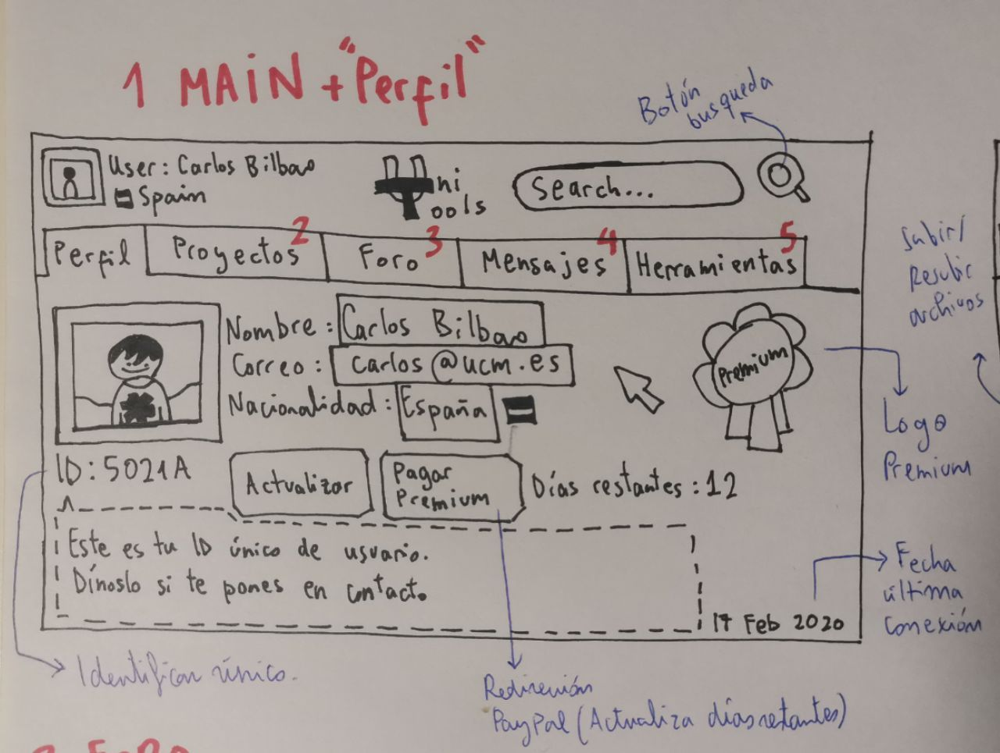
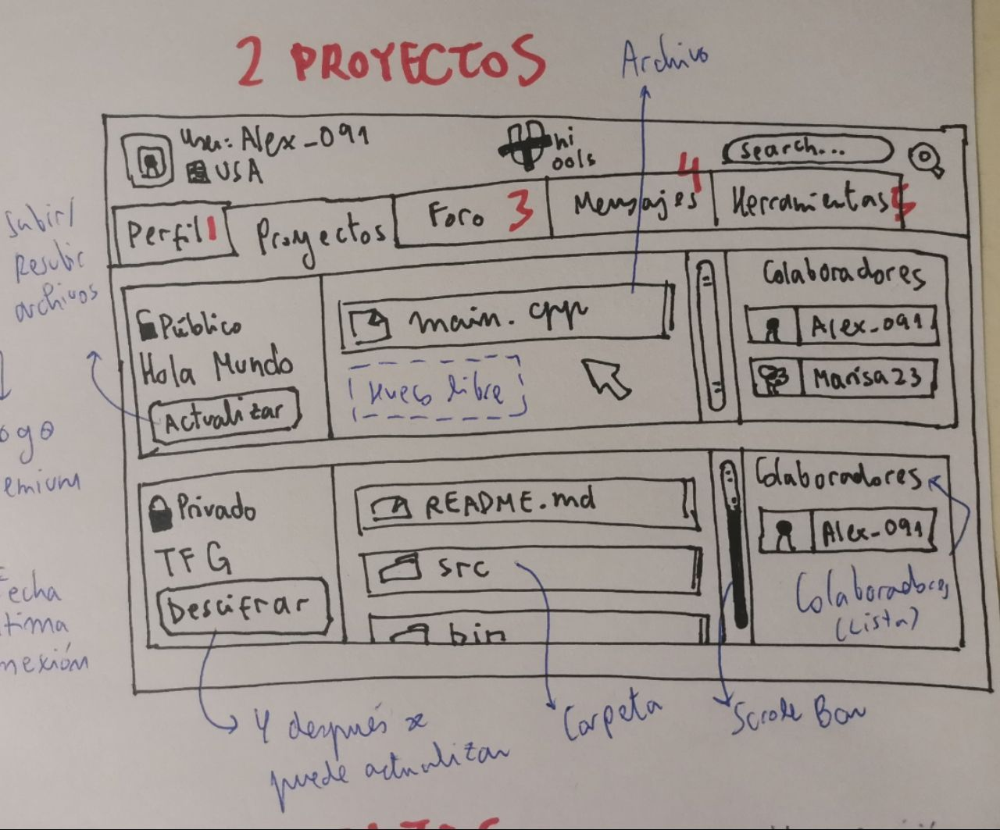
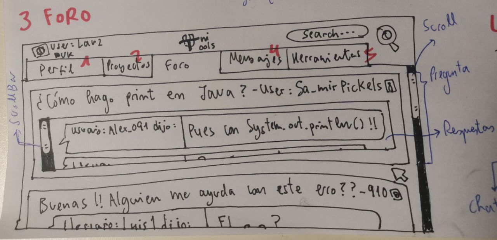
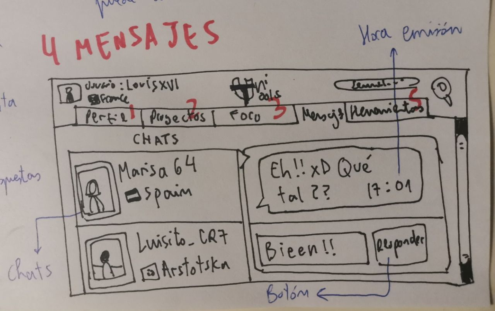
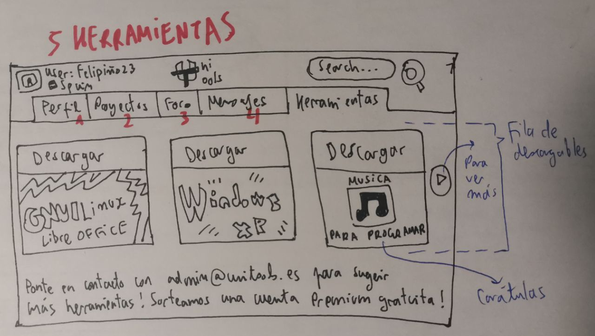

Descripción de perfil:
Si el usuario no está registrado e intenta acceder a la página, será
redireccionado a una página de inicio de sesión / creación de cuenta.
Si el usuario ha iniciado sesión, esta será la página de inicio. Contendrá información sobre el usuario y
se podrá visualizar datos como el nombre, correo, nacionalidad, id y foto de perfil.
Además mostrará si eres usuario premium o no mostrando un icono en pantalla. Si eres premium
se mostrará un contador con los días restantes hasta que expire la cuenta premium.
Tendrás la opción de actualizar tu perfil mediante un botón. También habrá un botón para
renovar la subscripción que llevará a Paypal, y tras su pago reiniciará el contador
de días restantes con servicios premium.
Aclarar además, que desde la página principal y desde todas las demás, se podrá navegar empleando
la barra de navegación que aparece arriba del todo, que contiene enlaces directos a las páginas principales
con sus respectivas funcionalidades.
Página de Proyectos

Descripción de proyectos:
Esta vista tiene como objetivo mostrar al usuario sus proyectos
o de los que forma parte. Los proyectos además podrán ser públicos o privados.
Cada proyecto tendrá su propia sección. Con el botón actualizar podrás
subir o actualizar archivos. Se podrá distinguir para cada proyecto
si se han subido archivos o carpetas. También se monstrarán los colaboradores de dichos proyectos
mostrando sus nombres de usuario y fotos de perfil, en caso de que sea un proyecto
individual, solo se mostrará en nombre del usuario que lo ha creado.
Página del Foro

Descripción del foro:
Aquí se mostrarán los mensajes del foto. Los usuarios podrán redactar
preguntas para que la comunidad pueda ayudar e intentar responderlas.
Para cada pregunta se mostrará el nombre de usuario acompañado de la duda
de este. Además se podrán visualizar las respuestas que le han dado otros
usuarios sobre la pregunta inicial. Cada pregunta estará dividida para
poder ver varias preguntas a la vez.
Página de Mensajes

Descripción de mensajes:
Estan esta seción se podrán escribir y mandar mensajes privados a tus
contactos y amigos que estén registrados en UniTools. Al hacer click en
el nombre de un usuario podrás ver el historial de mensajes, abajo abrá
una caja para escribir, y mandar los mensajes con el botón "Responder".
Página de Herramientas

Descripción de herramientas:
En esta página se podrán visualizar distintas herramientas descargables.
Aparecerán en vista de carrusel y las podrás descargar directamente desde
la página. En la parte inferior se mostrará un correo de referencia al que los usuarios
podrán escribir para sugerir más herramientas. Cada herramienta constará
de una carátula y de un botón de descarga. Este botón de descarga llevará al usuario a una pestaña
externa para que pueda descargar dichas herramientas.